ツールの「使い方の手引き」2冊（学生用・教員用。A4 縦の PDF で配り、印刷もできる冊子）の見た目を3案作りました。全体を作る前に方向を決めていただくための見本で、各案とも同じ4ページ（学生用の表紙・学生用「3 本文を書く」・教員用の表紙・教員用「3 年度の設定をする」）を並べています。画面の画像は本物のツールを撮ったもので（学生用はログインなしで試せる開発版、管理ページは試験用のサーバー）、番号の吹き出しを重ねています。文章は仮ですが、今のツールの動きに合わせて書いています。人名・学籍番号（文化 花子・00ZZ0123）と管理ページのメールアドレスは架空です。画像を押すと大きく見られます。おすすめの案には印を付けています。
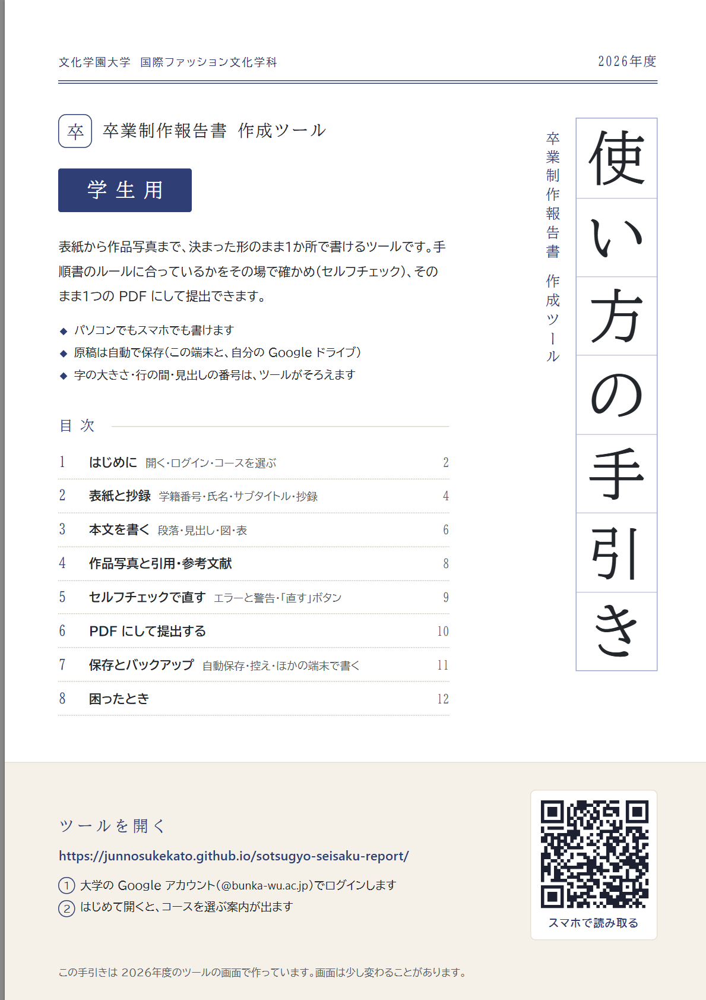
学生用の表紙：目次・ツールを開く手順・QR コード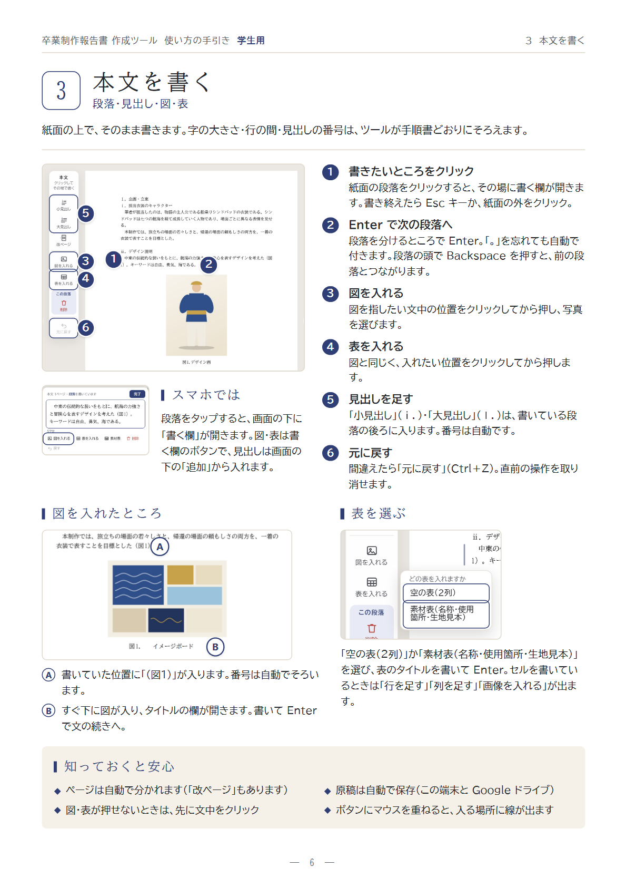
学生用「3 本文を書く」：画面に番号①〜⑥、右に手順。下に図を入れたところ・表を選ぶ・スマホ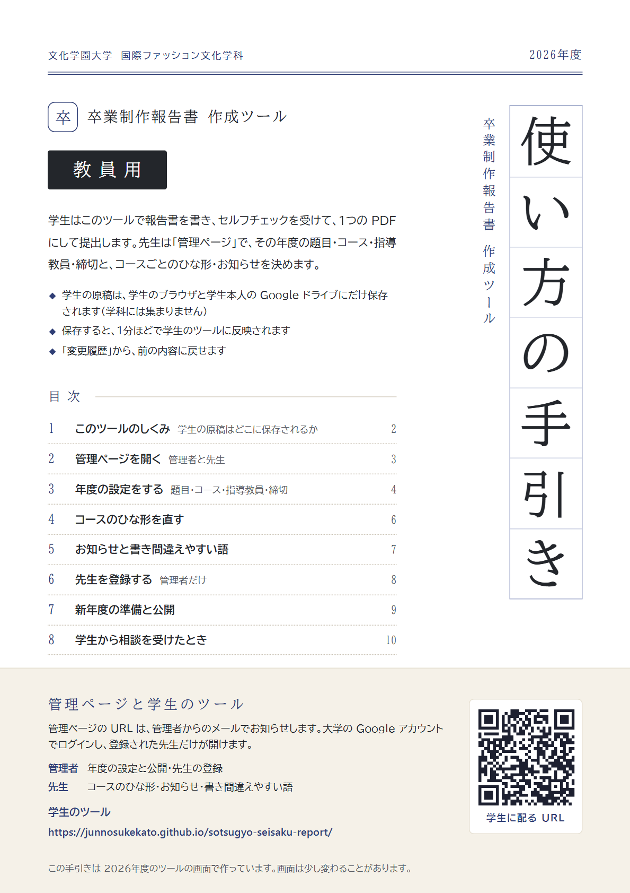
教員用の表紙：管理者と先生の役割・学生に配る URL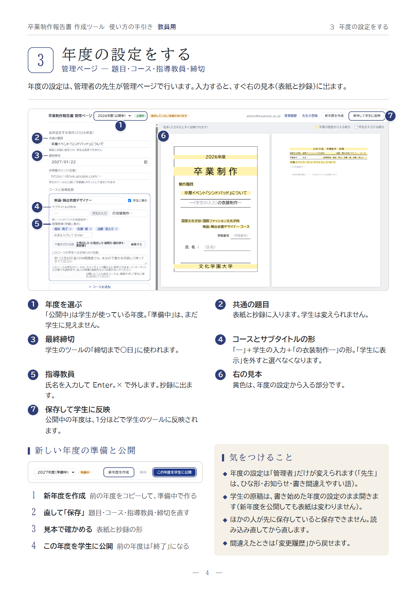
教員用「3 年度の設定をする」：管理ページの画面に①〜⑦、準備と公開の順番・気をつけることPDF：a.pdf（4ページ）
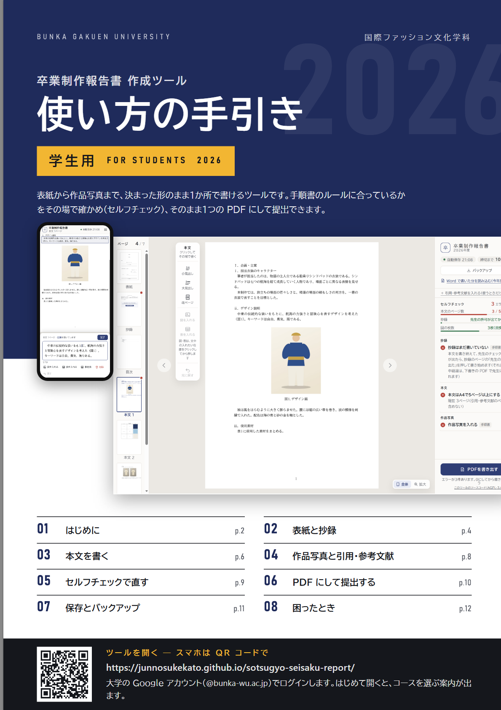
学生用の表紙：PC とスマホの画面を大きく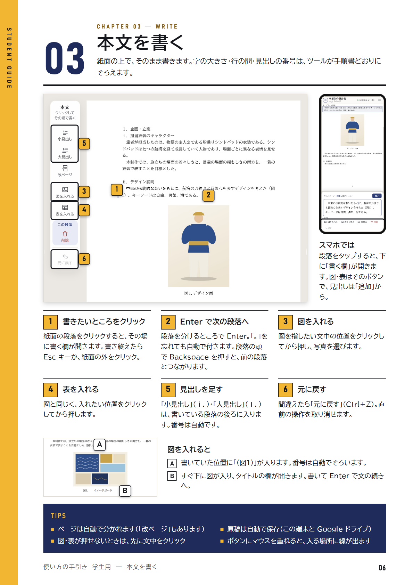
学生用「03 本文を書く」：画面とスマホを上に大きく、手順は3列×2段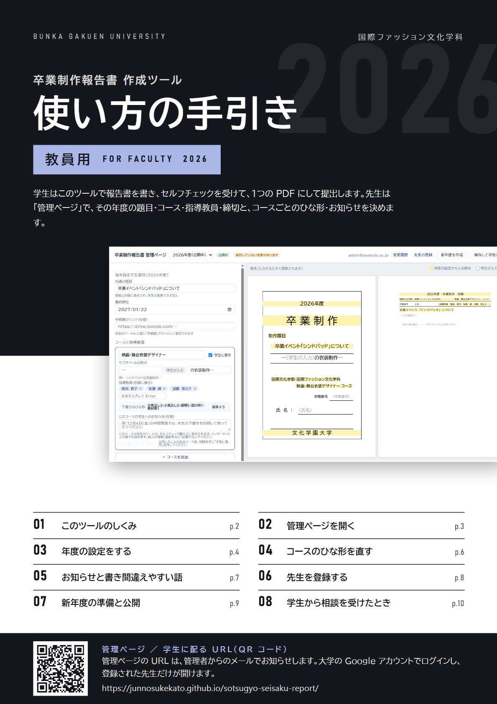
教員用の表紙：管理ページの画面を大きく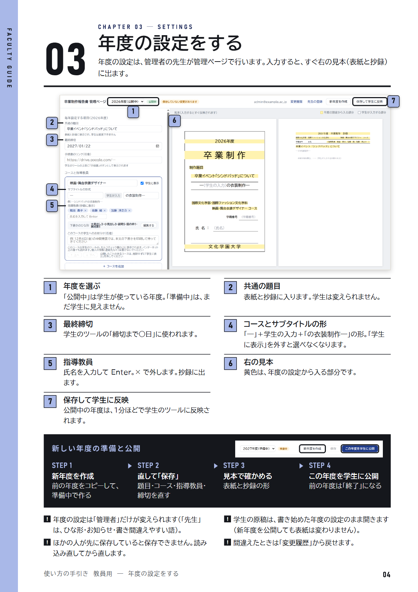
教員用「03 年度の設定をする」：準備と公開を黒い帯で STEP 1〜4PDF：b.pdf（4ページ）
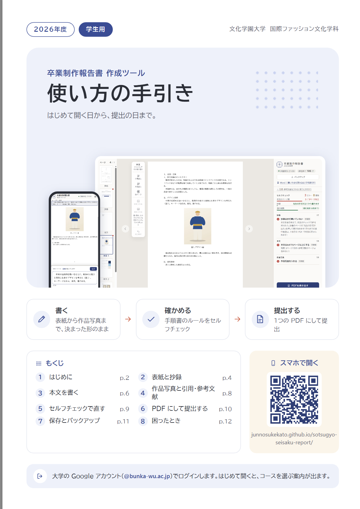
学生用の表紙：3つの流れのカード・もくじ・QR コード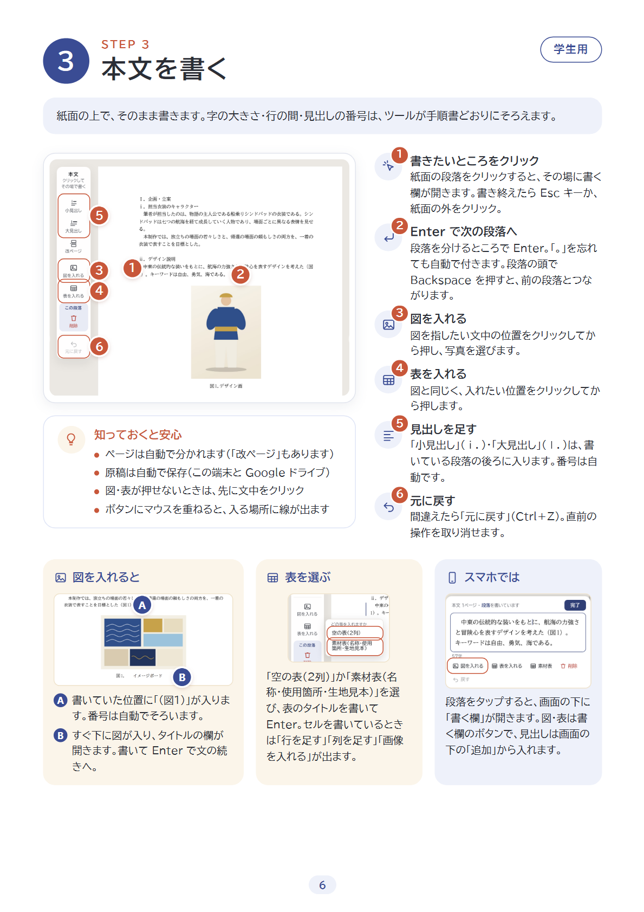
学生用「STEP 3 本文を書く」：手順ごとにアイコン、「知っておくと安心」は画像の下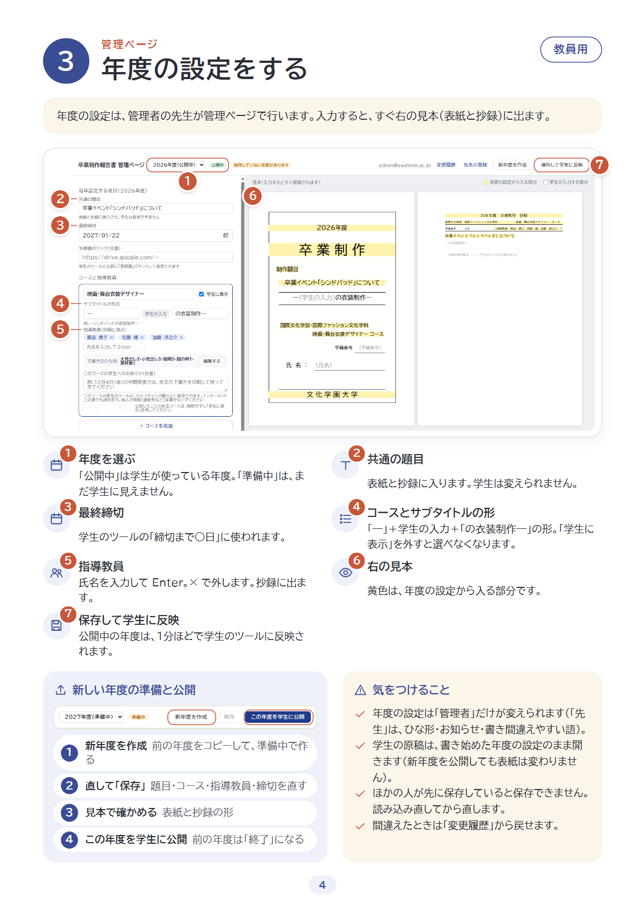
教員用「3 年度の設定をする」：準備と公開を丸い段で、気をつけることはチェックの印PDF：c.pdf（4ページ）
確かめたことPDF をそのまま白黒（グレー）にして並べました。学内のプリンターや家のプリンターで白黒で刷っても、番号の吹き出しと手順の説明が読めるかを見ています。
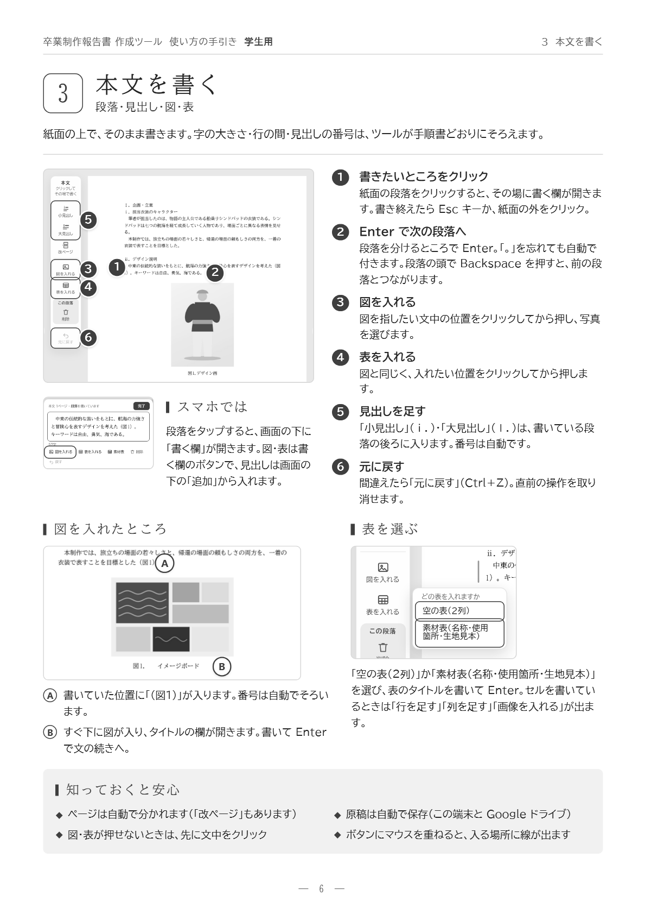
案A：吹き出しは濃いグレーに白い数字。いちばんはっきり読めます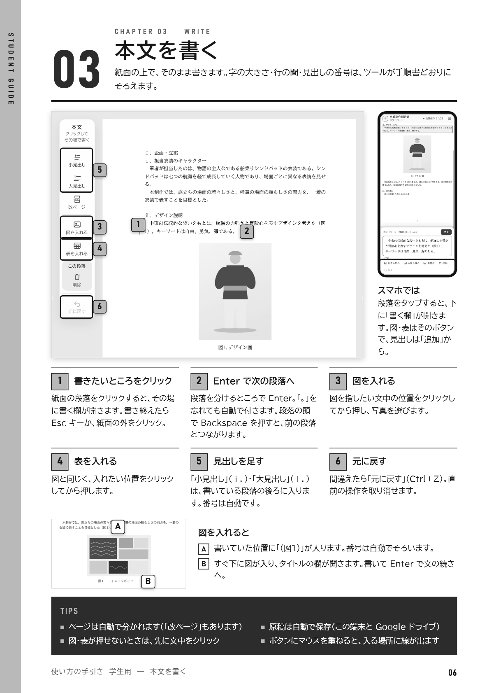
案B：吹き出しは薄いグレーに黒い数字と黒い枠で読めます。帯と表紙は黒が多くなります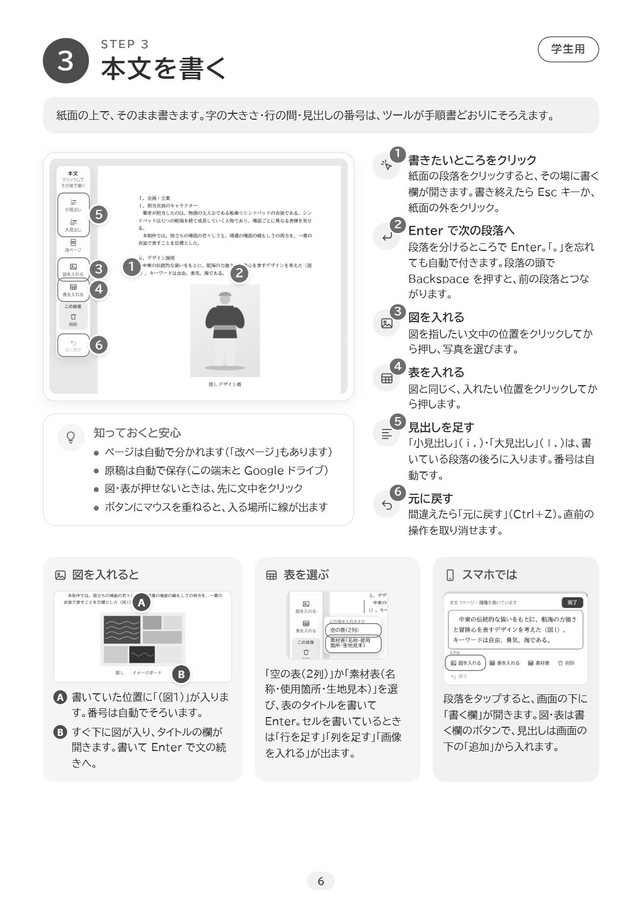
案C：吹き出しは中くらいのグレー。淡い色の面は消えて、区切りが弱くなりますおすすめは案A：学生がふだん見るツールの画面と同じ藍・生成り・明朝なので、冊子のどこを見ても「あの画面の話だ」とつながります。配るのは PDF でも印刷でもよく、白黒で刷っても番号の吹き出しがいちばんはっきり残り、紙の端まで塗る部分も少ないので学内のプリンターでもそのまま刷れます。教員用は罫と余白で区切った落ち着いた紙面で、要点を拾いやすくできます。学生用の「やさしさ」が足りないと感じられたら、案C の手順のアイコンや「知っておくと安心」の角丸の囲みを、案A の学生用にだけ足すことができます。案B は画面の画像が大きく華やかですが、トナーの量と紙の端の白いふちが気になり、印刷して配るなら向きません（PDF だけで配るなら候補になります）。案C は学生には親しみやすい反面、白黒では淡い色の区切りが消え、教員用には少しやわらかすぎます。